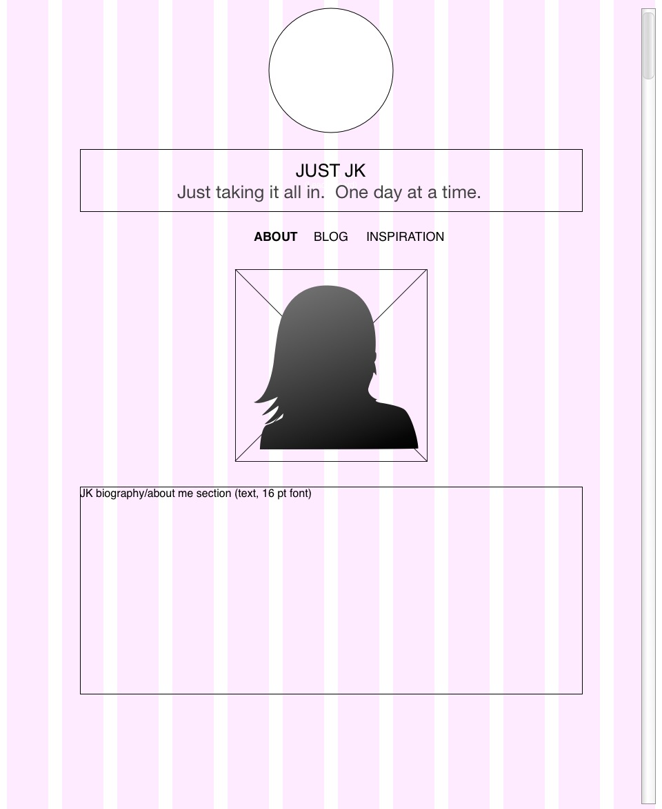
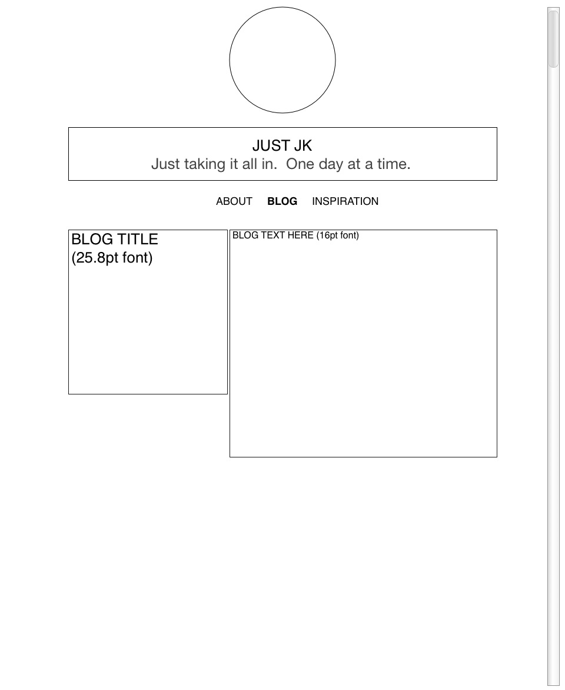
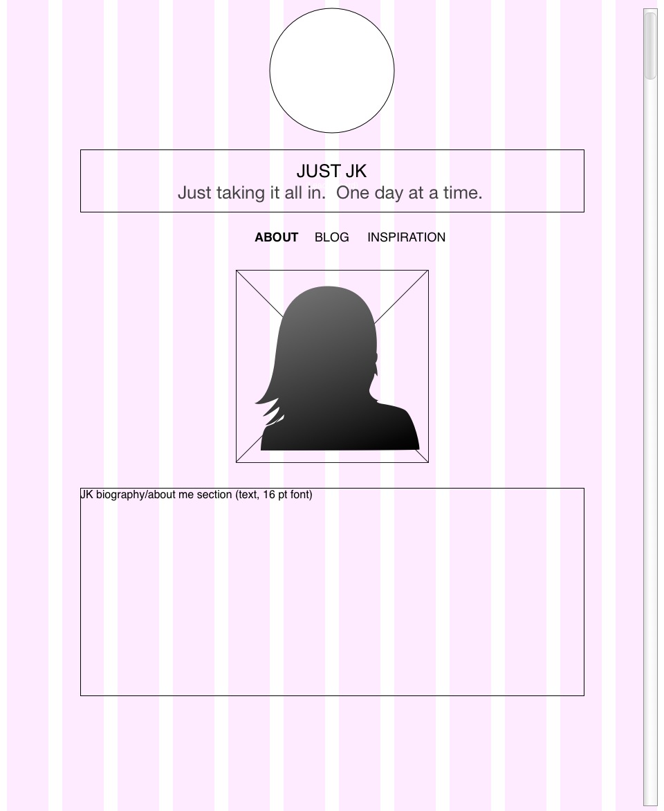
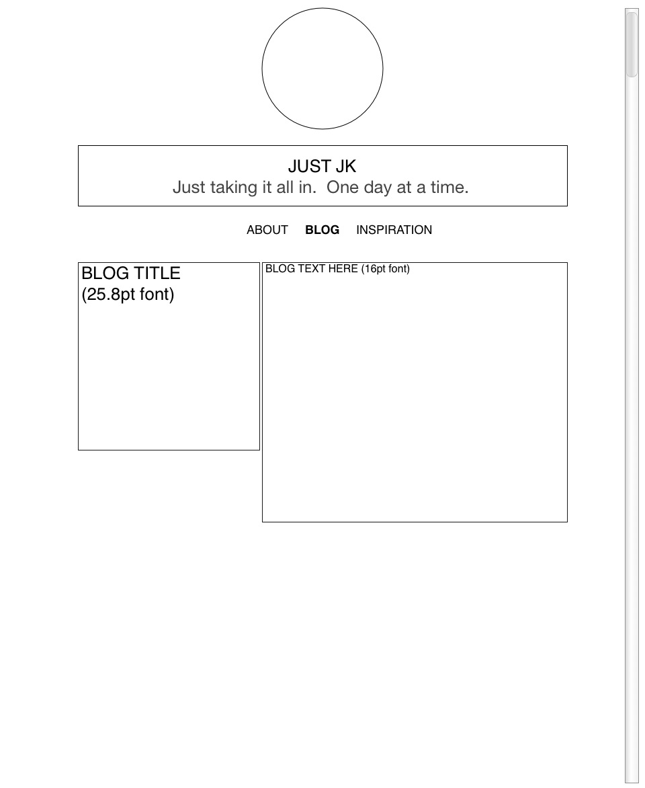

Both MBAXAmerica and Caitlin White's site are very clean. Caitlin's site has more white space and is arranged in four even columns. Her site does not have a single focal point, but rather attracts attention to her various writing projects.
MBAXAmerica uses photos that take up all of the screen space and pull the user through the site. The focal point on their site is the bold text serving as section headers.
MBAXAmerica uses varied styles throughout while maintaining a pattern by breaking up sections through the use of a large photo the spreads across the entire screen. Caitlin's site is much more uniform.
While both sites are contained on a single screen, Caitlin's images are hyperlinked to the original articles. At the moment, the Contently site is responding with a "502 Bad Gateway code ... what does that mean?"

